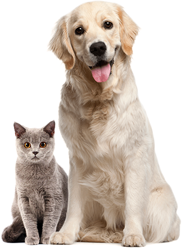

Not only people need a house
We offer to give a chance to a little and nice puppy with an extremely wide and open heart. He or she will love you more than anybody else in the world, you will see!
Not only people need a house
We offer to give a chance to a little and nice puppy with an extremely wide and open heart. He or she will love you more than anybody else in the world, you will see!


About the shelter "Cozy House"
Currently we have 121 dogs and 342 cats on our hands and statistics show that only 20% of them will find a family. The others will continue to live with us and will be waiting for a lucky chance to become dearly loved.
We feed our wards with the best food and make sure that they do not get sick, feel comfortable (including psychologically) and well. We are supported by 87 volunteers and 28 employees of various skill levels. About 12% of the animals are taken by the shelter staff. Taking care of the animals, they become attached to the pets and would hardly ever leave them alone.